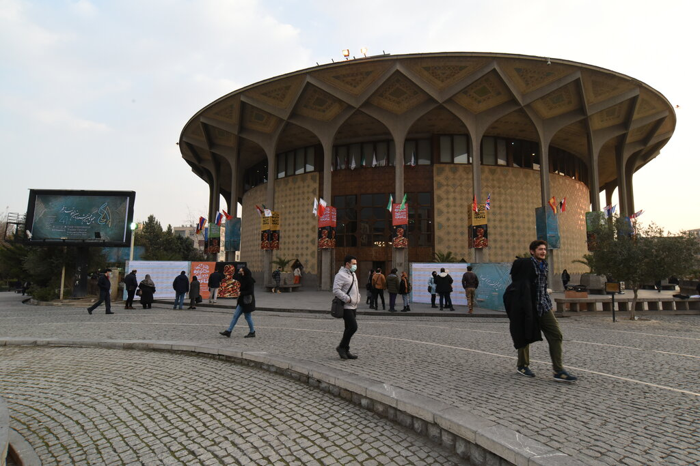

report
Urban Digital Memory: A tool to monitor / evaluate spatial interventions over the public space - a study of Teatré Shahr sqr., Tehran
Keywords (draft): Digital Memory, Right to the city, Social Media, Public Engagement, Digital Participation
Introduction
Relevance
Right to the memory as a right to the city
The Right to the City was coined by the French philosopher, Henry Lefebvre (1996), during the era in which the social movements became viral among the young intellectuals and labor activists who’d been seeking social justice within the urban areas (Mitchell, 2003; Habibi & Amiri, 2016: 11). After Modernism, the ownership over the land in urban areas through a capitalist monopoly, kicked off dramatically. At that time politicians, social activists, urbanists, and philosophers realized the need for a just city and a healthy environment in between the city blocks is something crucial and, in other words, could be considered a right for the citizens who live in there and use its space (Habibi & Amiri, 2016; Harvey, 2015, Lefebvre, 1996).
Furthermore, the notion was developed by David Harvey (2015) who argued that city dwellers can fight for their right over the space and generally, over the city. This act works against the manipulation and trespassing of the public domain by private developers and governments who attempt to carry out capitalism all over the vacant spaces for profit. Harvey (2015) suggested that this could be prevented by the public with social activities and demonstrations by knowing the Right to the City as their individual will to make a change in their living space and ultimately change themselves. Thus, the Right to the City is mostly interpreted as the right to public space. Who has access to it and who doesn’t, defines this right (Harvey, 2015; Habibi & Amiri, 2016; Moroni & Chiodelli, 2014).
If we consider the right over public space derived from the concept of the right to the city. Once people have their lived-experiences on a space, it forms their memories of that space. Since memory and physical space can be imagined as intertwined existences, the memories are attached to the physical space while the space holds the memories within its boundaries as well (notions of sense of place etc.). Thus, having the right over a public space, automatically gives the right to the memories towards it at the same time. In other words, policy makers, designers or any other entity that holds the authority or power to change the space has to take into account the sensitivity of a public space not only based on general spatial values and qualities, but also with memories embedded within that space. It should be acknowledged that citizens have a right to the space, and they have right to their memories of that space as common goods too.
Based on the same theoretical principles, the right to the city has always been discussed by Harvey (1993) to exceed further than just having accessibility to the resources (Tedeschi (2024)).
The abstract space described by Lefebvre (1991) limited to planning and design perspectives has changed into a rapid representation in various forms through digital information. The space is no longer an abstraction of a physical entity, but it is regenerated and transformed in a digital domain based on its rapidly-changing information Shaw and Graham (2017).
The technological development has brought new definitions of the right to the city concept. Tedeschi (2024) argues that algorithms have a right over space, for they produce and update information regarding physical space rapidly. This makes the accessibility and experience for its dwellers either disruptive or reinforcing with which leading them to negotiate their social intakes and power over space with such non-human entity. This creates a different level of inequality in a digital dimension.
inequalities of digital space
Digital era (archival memories)
In the digital age, the media has become a tool for any individual to express their thoughts, talk about their feelings, bring up ideas, share experiences and memories or cry out for their right as critical matter. One major feature of digital media is their archival potential. They are the database of memories of many individual and collective activities or events in a various set of contexts.
What archival memories can bring is not comparable to a curated, centrally organised museum set up excluded to visitors as the audience, but an independent multi-voice platform that anyone holding a digital device can share and publish to other users throughout the internet (Haskins (2007)). Even such idea was somehow suggested by Lefebvre (2003) that having a self-management feature over a digital platform should be a right, even though it was considered as a right to urban resources and not something higher Tedeschi (2024)
The importance of digital domain is not just about having horizontal archival memories made by numerous individuals, but the digital space itself as a phenomena that can trace the contents of a society regarding a physical space. Shaw and Graham (2017) brings up the importance of data flows in urban studies:
“Just as the urbanization of water is a processional notion which can uncover “stories about the city’s structure and development”, so can a reading of the city’s “political, social, and economic conduits” through which information flows also “carry the potential for an improved, more just, and more equitable right to the city””
Public Engagement (digital participation)
Again, from the right to the city, Mitchell (2003) highlights the right to the city which is oeuvre1, a piece of art, that each citizen contribute to it ((tedeschi2024:p.3?)). It is a piece of art, like a tapestry, with which city dwellers can create by sharing their lived experiences and lead that to actions ((tedeschi2024:p.6?); Currie et al., 2022; Martin (2025)). Taking citizens’ lived experiences and emotions towards a space through planning and design process would lead to a valued space, or the so-called place Martin (2025). Moreover, the public participation has always better received with urban projects regardless of being effective or not Martin (2025).
Even re-framing the Right to the City is led to co-design from governmental perspective towards shaping public space rather than just having citizens gaining more power and rights over their space (Tedeschi (2024)).
Taking the notions explained about the archival media, the autonomous authorship would lead to having a democratized media Haskins (2007) ; Martin (2025). This can be recognized as first steps towards public participation before engaging the stakeholders, mostly citizens or vulnerable groups. based on Arnstein (2019) ‘s ladder of participation, having the shared lived experiences of citizens on digital platforms may be a lower step, yet passively engaging position that is needed to be updated. Because this is not about active interaction of the planner / designer with citizens but reading or tracing citizens’ emotions on an autonomous semi survey publicly available Martin (2025).
One positive aspect of having the digital inputs, is the large scale of data. Despite of usually having limited number of active participants in urban projects, the digital platforms provide the opportunity to receive qualitative inputs from a larger scope and cover more citizens sharing their opinions and experiences Martin (2025) ; Fathullah and Willis (2018).
The digital participation is also supported by different studies Martin (2025) ; Haskins (2007). Also, Williamson and Ruming (2020) points out a further step of using the social media data on a participatory scale. They suggested the term of ‘Frontloading’ that refers to engaging the stakeholders on the early stages of planning through accessing the shared emotions and experiences on social media. (Read through MySydeney case)
inequalities of digital power through the social media
Research Objectives
Problem Statement
There are urban spaces, specifically, public spaces that hold a large pool of collective and individual memories within them, either tragic, joyful or revolutionary, City Theater’s Square2 is not an exception. However, the public apparently doesn’t have any right or authority over the space and the memories within it as a common property. There are spaces that get manipulated, transformed or even demolished by government enforced by economic or political interests. The citizens don’t have any agency over the space to make decision or at least to be informed clearly about the interventions or changes made by the actors on the higher ground. Not only with the actors, but also with the decision makers this applies too. Right to the memory is a metaphor of collective / individual rights over space tangled to memories emerged within it. This represents a bond made between the space and its dwellings and visitors by memories, emotions, presence and activities that shaped each person’s lived-experience in that space. Nevertheless, this connection is taken for granted by the actors, designers, policy makers and governments holding the upper hand of power. Sometimes it’s even ignored by them or does conflict with their main interests.
The memory is a valuable lived-experience that holds evidences of a lived, conceived and perceived physical space for each individual (Shaw and Graham (2017)).
Traces of urban space transformation through digital memory.
Problem in a sentence
The spatial memories are valuable intakes of a space that are taken for granted by the designers / decision-makers in their interventions causing erasure of the public space.
Research Questions
How can digital memories shared by citizens help identify spatial values as potential conditions for interventions in Teatré Shahr Square?
How do digital memories narrate the lived-experiences of citizens in the City Theater square on X (former twitter) and Instagram?
How can social media help as a passive-digital-participatory platform to identify the valuable spaces within the square?
What spatial values do citizens share about the City Theater square space transformation throughout time (before and after the latest intervention) as reflected on the social media?
How can digital memories towards a physical space set spatial conditions for valuable features of a space?
How shared memories on social media inform design guidelines for the City Theater square?
Scope (Case Study)
One of the public squares which has always been under drastic tension between its users and the ones who want to change it is the City Theater[1] square[2]. As can be seen in (Fig. 2), the square is in the intersection of Vali’asr and Enghelab streets which are the longest NS / EW armatures of Tehran.

Source: Google Earth, 2024

Source: Hamshahri Online, 2024.
[1] Teatré Shahr in Persian [Translated by the author]
[2] The square holds the city theater building within its space that could be considered as a semi-open public space in Tehran with all of the activities and events that take place downtown.
Theoretical Framework
The initial conceptual framework will help to extract necessary criteria to run the semantic analysis on collected data text strings from the targeted platforms. The conceptual framework is based on the principles driven out in the literature review considering the spatial qualities of how a space would picture memories and lived-experiences of citizens when they interact with it. And, how this can be identified and classified through semantic analysis of string data on online platforms.
The initial concept would be the transformation of space to place through people’s interactions that shapes sense of belonging towards their environment based on several spatial and contextual factors.

The belonging factors can be identified as below in Fig. 4 which represents a very initial draft of spatial and contextual aspects that would make direct and in-direct impact of ones sense of belonging towards the environment in which they have been to and interacted within it.

Ecology: green & blue elements, living species
Accessibility: sidewalk, pathways, entrances, gateways
Openness: open space, tiling, profile details
Sitting space: edges, fountain, benches
Landmarks: City Theater building, statues, fountain
Visibility: Eye view sheds, landmarks, corridors,
Safety: pedestrian priority, traffic control
Security: active presence, observer eye (eyes on the street)
Geography: topography, location
Climate: temperature, humidity, sun angle
Identity: symbols, culture, language, lifestyle
The memories of space or place that are turned to lived-experience and expressed through emotions on digital space are useful assets to analyze a space from a cognitive view.
The users share different experiences of their presence and interaction within the lived space on social media. As mentioned before, their posts and tweets would hold various emotions. The main gap would be how to trace the spatial feature out of these shared emotions.
Thanks to the Lynch’s (1964) Lynch (n.d.) cognitive analysis concepts ad methods of the perceived space or city, the spatial features could be tracked and recognized by how the individuals described their situation or position of the space ad their mentions could be classified to Lynch’s cognitive features of nodes, lines, areas, edges and landmarks. The further workflow would be focused on relating different sentiments to each corresponding spatial feature of the context. For example, someone could have gone angry due to presence in a specific area with edges.
The semimetal classification of each feature would help to come up with valuable places and how they were designed, as a corresponding design, and spaces that need improvement. This would help for further steps of design process and producing spatial conditions over spaces that are holding memories that can be recalled as a public good.
Framework
Based on the above-mentioned notions and theoretical backgrounds, the conceptual framework is structured, for it will be a stepping stone as theoretical lens over the methodology and further steps of this study. The details and connections of each notion is illustrated in the following figure.

The memories shared on social media as available data will be collected and go through the sentimental analysis of distinguishing various types of emotions and expressions that are chosen as the four emotions:
Anger
Sadness
Comfort
Happiness
Based on Lynch (n.d.) ’s perceptive urban elements, each shared emotion would have one or multiple corresponding spatial features that affected the person’s cognition and co-created their lived-experience. The features are as follows:
- Line
- Node
- Edge
- Area
- Landmark
After relating each emotion to their addressed physical elements within the space, the emotions towards anger or sadness can be considered as spaces that are not correspondent. Thus, they may need spatial improvements or interventions. The second approach would be focused on spaces that caused happiness or comfort shared by users on social media. Those spaces are already correspondent and have positive impacts on the society. They can be considered as valuable spaces at the same time that their spatial characteristics should be processed and applied as design qualities for spaces that do not hold the same quality within Teatré Shahr square. All of this process happens within its context, which is Teatré Shahr in this case, and each step has interrelations with the environment chosen as the study area. Hopefully, in the design steps, the relation would be circular and not one-way but more interactive.
Methodology (methods and planning)
The main target is to collect the data from posts and tweets shared by public profiles through social media platforms of Instagram and X (former Twitter). The analysis frame will be concentrated on the latest interventions happened to the City Theater square. There are pre-intervention and post-intervention phases in which public shared their opinions, expressions, impressions as lived-experiences when the square was intact versus when it was transformed through re-design procedures in the past two years of a time-stretched project.
The main variable that will be collected is the text strings within tweets on X and post captions on Instagram using scraping application specialized for these platforms 3 considering the legal and regulatory procedures of online scraping. The data collection will follow a specified time-frame mentioned before and defined keywords to narrow the search domain as specific as possible. Names like “Teatré Shahr”, “Teatré Shahr square” or “Vali’asr intersection” would be used as ques to locate and collect any related data to the chosen case study.
After that, the data needed to be cleaned from unnecessary details or non-relative expressions, so the analysis would be applied appropriately. After that, the cleaned data will be classified based on sentiment values driven from the structured conceptual framework. By overlapping the driven criteria to semantically classified data, classified as various expressions of anger, sadness, happiness, fear etc., the spatial qualities and design guiding values could be shaped or at least frame an overview of what is valuable and should be preserved and what might be the alternatives of design for such public spaces.